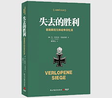

失去的胜利

| 作者: [德] 冯·埃里希·曼施泰因 著 | 开本: 16开 |
| 出版社: 民主与建设出版社 | 纸张: 胶版纸 |
| 出版时间: 2015-09 | 页数: 568页 |
| 版次: 1 | 字数: 530千字 |
| ISBN: 9787513906128 | 定价: 49.80 |
| 分类: 军事 | 装帧: 平装 |
内容简介:
曼施泰因以他在第二次世界大战中的亲身经历为主线，根据其私人日记和其他资料，介绍了德国进行侵略战争的经过，尤其是详细地描述了他亲自指挥的几次重大作战行动，阐述了他对二战中各个事件和重要人物的看法。该书对于我们了解二战中德军的一些决策内幕，尤其是许多重大战役的计划制订过程及其实施，有十分重要的参考价值。
作者简介:
冯·埃里希·曼施泰因 ，德国陆军元帅，出身于军官世家。在第二次世界大战中，曼施泰因积极参与制订和实施希特勒的侵略战争计划，先后任集团军群参谋长、集团军司令、集团军群司令。1944年3月，因在作战指导上与希特勒发生分歧被解职；1945年5月被英军俘虏；1949年12月被战胜国判处18年徒刑，1953年因病获释。战后，被联邦德国阿登纳政府聘为顾问，参与组建联邦国防军。1973年6月病逝，终年86岁。戴耀先 中国人民解放军军事科学院研究员、大校，从业33年，一直从事德国军事研究，论著、译著十余种。主要有：《论德国军事》《德意志军事思想研究》《德国总参谋部》《总体战》《第二次世界大战大事记》等。
Copyright © 2018-2020 徐悦佳. All rights reserved.